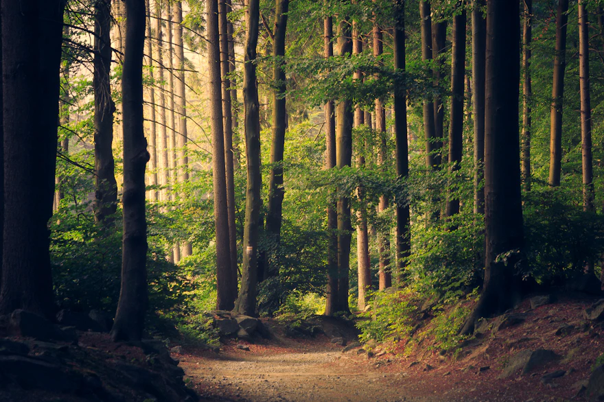
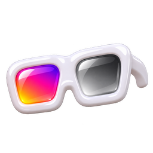
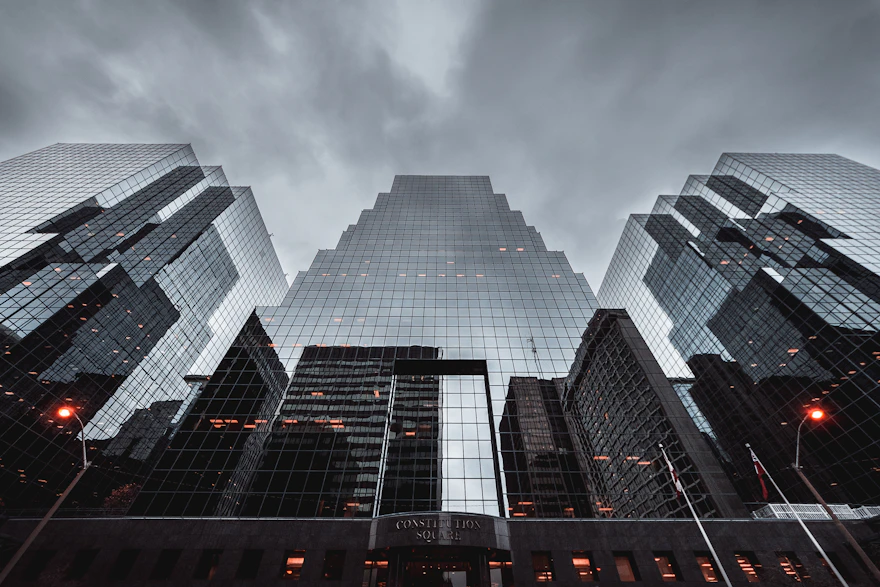

Maya ChenLandscape designer · 38m
On a site visit, I always walk the path in both directions. You’d miss this patch of light coming the other way.

32 reactions4 comments

Go GrayProtect your dopamine wherever you scroll.
Get Go Gray For Chrome, Firefox & ZenOn a site visit, I always walk the path in both directions. You’d miss this patch of light coming the other way.

The posters are back from the printer. See you at Form Week!
From street level these towers look like three different heights. Look at the reflections and you can see where the glass steps back.

Three inks, one sheet. A first look at the cover proofs for our summer issue.
On the studio wall this week: the blue and ochre of Van Gogh’s Sunflowers.

LinkedIn, X, and Instagram start in gray. Add TikTok, YouTube, or any other website from the popup in one click.
Keep one tab in full color while the rest follow your site settings. Or make a single tab gray.
Pause grayscale everywhere for 2, 5, or 10 minutes. It comes back on its own.
Download a desktop build from GitHub and follow the steps for your browser.
Unzip the Chrome download. Open chrome://extensions, turn on Developer mode, then choose Load unpacked and select the unzipped folder.
Unzip the Firefox download. Open about:debugging#/runtime/this-firefox, choose Load Temporary Add-on, and select manifest.json in the folder. This build stays installed until you restart your browser.